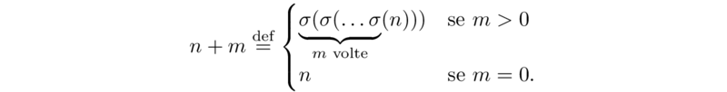

Peano axioms
The arithmetic of the integers, like the geometry of the plane, can be made to depende on a few axioms. As early as 1891 G. Peano showed that all the properties of the natural numbers can be derived from five axioms, which now bear his name .
We take the natural numbers to be elements of any set ℕ, defined by the triple (ℕ, σ, 0) where ℕ is a set, σ an application from ℕ to ℕ and 0 an element of ℕ with the following properties (Peano axioms):
ℕ1 σ is injective: Every number n has precisely one successor n'.
ℕ2 0 ≠ Im σ
ℕ3 (Assioma di induzione): every subset U of ℕ such that
0 ∈ U
k ∈ U ⇒ σ(k) ∈ U ∀k
coincide con tutto ℕ.
Given an element n ∈ ℕ, the element σ(n) is said successor of n. Resta definita in ℕ allora in modo naturale una relazione d'ordine, ≤. Il postulato ℕ3 è noto come il
principio di induzione matematica. Si può dimostrare che se (𝔸, σ,0) e (𝔸',σ',0') sono due terne che verificano i postulati precedenti, allora esse sono "sostanzialmente identiche", nel senso che esiste una corrispondenza biunivoca φ tra 𝔸 e 𝔸' tale che σ'(φ(n)) = φ(σ(n)), cioè il successivo del trasformato è il trasformato del successivo. Quindi si può dire che i postulati di Peano caratterizzano i numeri naturali. Quello che si deve postulare (cioè accettare senza dimostrazione) è l'esistenza di un insieme ℕ verificante gli assiomi di Peano. L'intero edificio matematico è pertanto basato sull'accettazione dell'esistenza dei numeri naturali. Knonecker espresse questo fatto con la famosa frase:
Die ganzen Zahlen hat der liebe Gott gemacht, alles andere ist Menschenwerk. (Kronecker)
Ora, dai soli postulati di Peano è possibile ricavare tutte le proprietà ben note dei numeri naturali. Ci serviamo di alcune definizioni.
Definition 1.4. Una operazione binaria in un insieme S è un'applicazione da S x S in S, ossia una legge che associa ad ogni coppia di elementi di S un ben determinato elemento di S.
Ad esempio, l'unione tra sottoinsiemi di un insieme X è un'operazione binaria definita in 𝓟(X):
U : 𝓟(X) x 𝓟(X) → 𝓟(X)
(A,B) ↦ A U B
L'ordinaria addizione tra interi è un'operazione binaria definita in:
+ : ℤ x ℤ → ℤ
(a,b) ↦ a +b
Il risultato dell'operazione di addizione, ossia l'elemento a+b ∈ ℤ, prende il nome di somma di a e b.
Si parla anche di operazioni n-arie per vari n= 1,2,.... Si tratta di applicazioni da S x S x ... x S in S. Per n = 1 un'operazione 1-aria definita su S è un'applicazione da S a S. Se S = P(X), un esempio di applicazione 1-aria è l'applicazione che associa ad ogni sottoinsieme di X il suo complementare.
Definition 1.5. Una struttura algebrica è un insieme A dotato di una o più operazioni n-arie definite su A che soddisfano ad eventuali assiomi.
È importante evidenziare che, dagli assiomi di Peano, discendono tutte le ben note propriet`a dell’insieme dei numeri naturali. In particolare le operazioni di somma e prodotto e le ben note proprietà di tali operazioni possono essere dedotte dagli assiomi di Peano.
Definition 1.6. Si definisce somma di due numeri naturali n ed m il numero naturale n +m dove
Da questa definizione risulta ovviamente σ(n) = n+1, dove 1 = σ(0).
Definition 1.7. Si definisce prodotto di due numeri naturali n ed m il numero naturale n + m dove
In genere saremo interessati solo ad operazioni binarie, che chiameremo senz'altro operazioni, omettendo la specificazione "binarie".
The principle of mathematical induction
Il terzo assioma di Peano ℕ3 è alla base del principio di induzione. Esso sostanzialmente dice che se un sottoinsieme U di ℕ è tale che contiene lo zero e, accanto ad ogni elemento, contiene anche il successivo, allora necessariamente U coincide con tutto ℕ. L'accettazione di questo assioma fornisce "gratuitamente" un metodo di dimostrazione per induzione che è di fondamentale importanza matematica. Vediamo in che cosa consiste. Supponiamo che per ogni intero n ≥ 0 si possa formulare una proposizione P(n), dipendente dall'interno n, ad esempio la proposizione seguente: "se un insieme finito S ha n elementi, allora l'insieme delle parti di S ha 2n elementi". Supponiamo di voler provare che la proposizione P(n) è vera per ogni n: si tratta di dimostrare infinite proposizioni! Ebbene il metodo di dimostrazione per induzione permette di ottenere questi infinit risultati con due soli passi. Si procede nel modo seguente:
Base dell'induzione: Dimostrare che è vera P(0)
Passo induttivo: Dimostrare che per ogni k, dall'essere vera P(k) segue che è vera P(k+1).
Allora si può concludere di aver dimostrato che P(n) è vero per ogni n. Infatti posto U = { n ∈ ℕ | P(n) è vera}, risulta 0 ∈ U perché è stato provato che P(0) è vera. Inoltre, k ∈ U, cioè se P(k) è vera, allora P(k+1) è vera, (passo induttivo) e quindi k+1 ∈ U, da cui segue, in virtù di ℕ3, U = ℕ, ossia P(n) è vera per ogni n.
Si notiche che se vogliamo dimostrare una proposizione P(n) non per tutti gli n, ma per tutti gli n ≥ n0, basta provare come base dell'induzione P(n0) anziché P(0).
Provare che per ogni intero positivo n la somma dei cubi dei primi n numeri pari è data da
23 + 43 + 63 + ... + (2n)3 = 2n2 (n+1)2
Proof - Dovremo provare:
La base dell'induzione: P(1) è verificata perché per n = 1 entrambi i membri si riducono a 23.
Il passo induttivo: Supposta vera P(n-1), dimostriamo P(n). La P(n-1) (che stiamo supponendo vera) è:
23 + 43 + 63 + ... + (2n-1)3 = 2n(n-1)2n2
Aggiungendo ad ambo i membri dell'ultima equazione (2n)3 si ha
23 + 43 + 63 + ... + (2n-1)3 = 2n(n-1)2n2 + (2n)3 = 2n2[(n-1)2 + 4n] = 2n2 (n+1)2
che è esattamente P(n).□
Diamo qui di seguito due formulazioni equivalenti del principio di induzione ℕ3 perché, a seconda dei casi che si presentano, può essere conveniente utilizzare una formulazione invece di un'altra. Consideriamo le seguenti due asserzioni, 𝕀 e 𝕄:
Definition 1.8 (Induction principle 𝕀: strong induction) Every subset V of ℕ satisfying the following properties:
0 ∈ V
if V contains all numbers less than n then it also contains n, concisely:
n ∈ V if k ∈ V, ∀k such that 0 ≤ k < n
then V coincides with ℕ.
Theorem 1.9 (𝕄: The Well-Ordering Theorem or of the least element) Every nonempty set T of ℕ contains a least element. That is, there is an element t ∈ T such that t ≤ x ∀ x ∈ T
Un insieme parzialmente ordinato X si dice ben ordinato se ogni sottoinsieme non vuoto di X ha un elemento minimo.
Proposition 1.10 Il principio del buon ordinamento e il principio di induzione forte sono equivalenti.
Proof - Assumiano vero il principio di induzione forte e proviamo il principio del buon ordinamento. Supponiamo che S sia un sottoinsieme non vuoto di ℕ. Sia T = ℕ \ S. Supponiamo per assurdo che S non abbia elemento minimo. Allora 1 ≠ S, perché se lo avesse allora sarebbe sicuramente l'elemento minimo di S poichè è l'elemento minimo di ℕ. Allora 1 ∈ T. Si suponsa che per un k, si abbia 1 ≤ i ≤ k, i ∈ T. Si consideri k+1. Se k+1 fosse in S, sarebbe l'elemento minimo di S perchè nessun i compreso tra 1 e k si trova in S. Siccome stiamo assumento che S non abbia elemento minimo, si deve avere k+1 ∈ T. Per il principio di induzione forte, T deve contenere tutti i numeri naturali e quindi essere uguale ad ℕ. Segue che S = ∅. Questa è una contraddizione, concludiano quindi che S possiede elemento minimo.
Adesso si supponga che il principio del buon ordinamento sia vero e proviamo il principio di induzione forte. Sia U un sottoinsieme di ℕ verificante le ipotesi di 𝕀 e supponiamo per assurdo che U ≠ ℕ. Allora detto V = N \ U, risulta V ≠ ∅. Per la 𝕄 esiste un minimo m ∈ V, che sarà maggiore di zero, perchè 0 ∈ U. Essendo m minimo per V, ogni k tale che sia 0 ≤ k < m sta in U. Ma allora per la (b) di 𝕀, m ∈ U, che è un assurdo.□
Mettiamo subito in pratica questi metodi di dimostrazione, per esempio, per provare la seguente proposizione riguardante la divisione in ℕ.
1.4.7 Proposizione. Siano a,b ∈ ℕ, b ≠ 0. Allora esistono due numeri naturali q,r tali che
a = bq + r, 0 ≤ r < b
Dimostrazione. Utilizziamo il principio del buon ordinamento: sia q + 1 il pià piccolo intero tale che b(q+1) > a (tale minimo esiste sicuramente, considerando l'insieme non vuoto T = {x ∈ ℕ| bx > a})
Si ha pertanto
bq ≤ a < b(q+1)
da cui
0 ≤ a - bq < b
Posto r = a - bq, si ha a = bq + r, 0 ≤ r < b. □